Arduino and Machine Vision
Part 1: Fundamentals of Arduino (E377 – Mechatronics System and Design) · Part 2: Computer vision with a Raspberry Pi
No coding experience needed. You will learn to read and write a simple program, including a loop, build circuits in Tinkercad, then teach a camera to tell a good apple from a bad apple.
By the end you can
- Name the main parts of an Arduino board.
- Explain how a switch and an LED work, including "active high" and "active low".
- Read a circuit diagram and build it on a breadboard.
- Tell the sections of a program apart and say what each one does.
- Write a program that uses a switch to control an LED.
- Train an image model and run it on a Raspberry Pi camera, and explain what YOLO adds.
1What is Arduino?
Arduino is a small, open-source electronics board. You write instructions on your computer, send them to the board, and the board follows them to control lights, motors, sensors and more.
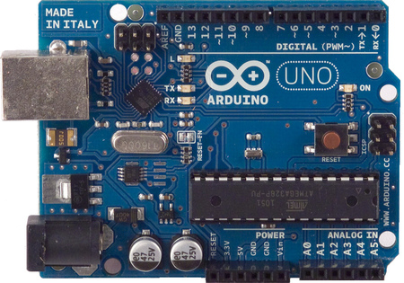
- Open-source
- The designs are shared freely, so anyone can use, copy and improve them.
- Microcontroller
- A tiny computer on one chip. The Uno has an Atmel AVR microcontroller. It does one job: run your program.
- IDE (Integrated Development Environment)
- The program on your computer where you write your code and upload it to the board.
2Why use Arduino?
- Inexpensive. Cheaper than most other microcontroller boards.
- Works on any computer. Windows, Mac and Linux.
- Easy to use. Good for beginners, and powerful enough for experts.
- Open and extendable. Free code libraries are available, written in the C++ language, and you can add extra modules.
3Parts of the board
You do not need to memorise these now. Come back to this table when you build a circuit.
| Part | What it does |
|---|---|
| USB jack | Connects to your computer with a USB cable. |
| Power jack | Lets you power the board from an external power supply. |
| Reset button / reset pin | Starts your program again from the beginning. |
| 3.3V and 5V | Power outputs for your parts. |
| GND (ground) | The "0 volts" connection. Circuits need it to complete the loop. |
| Vin | Another way to power the board from an external source. |
| D0 to D13 | Digital pins. Each can be an input or an output. |
| A0 to A5 | Analog input pins. |
| D0 (RX) | Receives signals. |
| D1 (TX) | Transmits signals. |
| Analog Reference | Sets an outside reference voltage. |
| In-circuit serial programming | An extra way to program the board. |
Digital vs analog: a digital pin knows only two states, ON (HIGH) or OFF (LOW). An analog pin can read a range of values in between.
4How a program is structured
Every Arduino program has three parts, in this order:
- Declaration. Give a name to each device connected to the board and say which pin it uses. Also name any values you will store.
- Initialization (runs once). Runs one time when the program starts. Set each device as an input or an output. This part is the
setup()function. - Main program (loops). Runs the same instructions again and again, forever. This is the
loop()function.
This is your first loop. A loop repeats instructions over and over. Arduino's loop() never stops while the board has power. That is why a robot can keep checking its sensors.
- Function
- A named block of instructions. Curly brackets
{ }mark where it starts and ends.
5Constants: names that never change
Give every connected device a name so your code is easy to read. Here is a pushbutton:
const int buttonPin = 2;Read it one word at a time:
buttonPinis the name we chose for the pushbutton.2means the button is connected to digital pin D2.intmeans the value is an integer (a whole number).constmeans constant. The value is fixed and cannot change.
Check yourself
In const int ledPin = 8;, which pin is the LED connected to?
Show answer
Digital pin 8. The name ledPin is just a label we picked.
6Variables: names that can change
A variable is like a labelled box in the board's memory. You can put a value in it and change that value later.
int buttonState = 0;buttonStateis the name of the box.intmeans it stores whole numbers only.= 0means it starts with the value 0.
7Constant or variable?
Look at the two lines side by side:
const int buttonPin = 2; // fixed: the button always stays on pin 2
int buttonState = 0; // not fixed: changes when the button is pressedThe only difference is the word const. Use a constant for things that never change, like a pin number. Use a variable for things that change, like the button's state.
Check yourself
You want to store how many times a button was pressed. Constant or variable?
Show answer
A variable, because the count changes each time.
8pinMode: input or output?
Before using a pin, tell the board which way information flows:
- OUTPUT: the board sends a signal out, for example to an LED.
- INPUT: the board listens for a signal, for example from a button.
void setup()
{
pinMode(ledPin, OUTPUT); // the LED is an output
pinMode(buttonPin, INPUT); // the pushbutton is an input
}These go inside setup(), so they run once at the start.
9digitalWrite: turn things on and off
digitalWrite sends a HIGH (on) or LOW (off) signal to an output device.
digitalWrite(ledPin, HIGH); // turn the LED onThe first item in the brackets is the device's name. The second is the state to write.
10digitalRead: find out the state of a button
digitalRead checks an input device and tells you whether it is HIGH or LOW. Save the answer in a variable so you can use it.
buttonState = digitalRead(buttonPin);This reads the button on buttonPin and stores the result in buttonState.
Check yourself
Which one sends a signal out, digitalWrite or digitalRead?
Show answer
digitalWrite. digitalRead listens.
11The LED circuit
An LED (Light Emitting Diode) is a small light. In this circuit it is active high: write HIGH to turn it on, write LOW to turn it off.
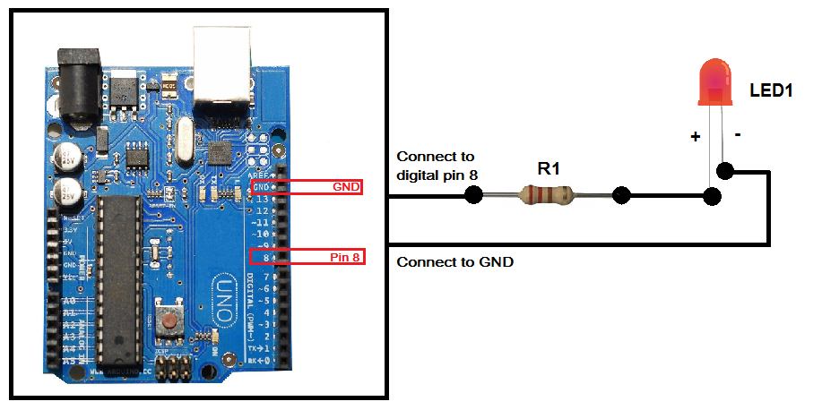
The resistor protects the LED from too much current. Do not leave it out.
Build it in Tinkercad Circuits like this:
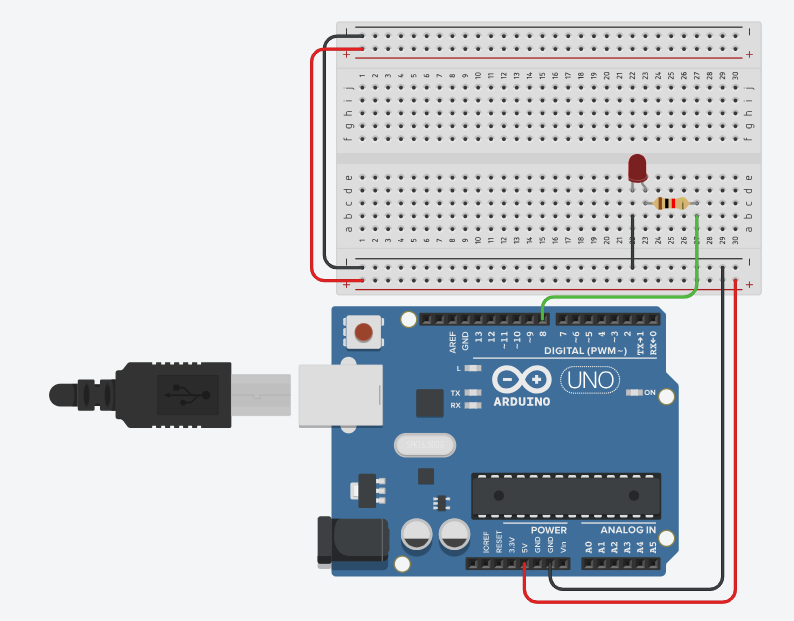
Check yourself
- What does the resistor do?
- In an active high LED circuit, which state turns the LED on?
Show answers
The resistor limits the current to protect the LED. HIGH turns it on.
12Blink an LED: your first loop
Put everything together. Copy this code into the Tinkercad code editor, then press Start Simulation.
const int ledPin = 8; // LED connected to digital pin 8
void setup()
{
pinMode(ledPin, OUTPUT); // LED is an output
}
void loop()
{
digitalWrite(ledPin, HIGH); // LED on
delay(3000); // wait 3 seconds
digitalWrite(ledPin, LOW); // LED off
delay(3000); // wait 3 seconds
}delay(3000) pauses for 3000 milliseconds, which is 3 seconds. When loop() reaches the last line, it starts again from the top. That is why the LED blinks forever.
Try it: change both 3000s to 500. What happens? Now make the LED stay on for 1 second and off for 3 seconds.
Check yourself
Which part of the code runs only once, and which part repeats?
Show answer
setup() runs once. loop() repeats forever.
13A button controls the LED
A pushbutton is an input device. It sends HIGH or LOW to the board. In this circuit the button is active high:
- Button pressed: HIGH is sent, so the LED turns on.
- Button not pressed: LOW is sent, so the LED turns off.
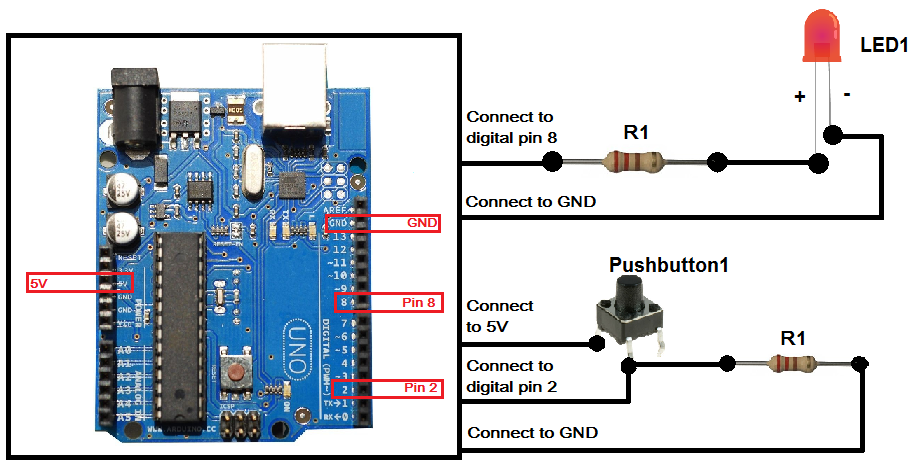
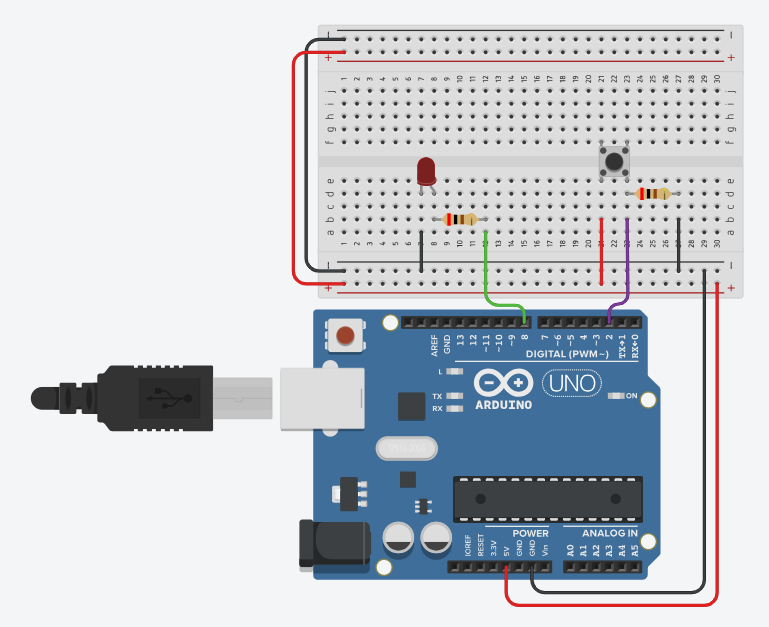
const int buttonPin = 2; // pushbutton on digital pin 2
const int ledPin = 8; // LED on digital pin 8
int buttonState = 0; // stores the button's state, starts at 0
void setup()
{
pinMode(buttonPin, INPUT); // button is an input
pinMode(ledPin, OUTPUT); // LED is an output
}
void loop()
{
buttonState = digitalRead(buttonPin); // read the button
if (buttonState == HIGH) // pressed?
{
digitalWrite(ledPin, HIGH); // LED on
}
else // not pressed
{
digitalWrite(ledPin, LOW); // LED off
}
}if / else lets the program choose. If the button is HIGH, do the first thing. Otherwise, do the second. Because it sits inside loop(), the board checks the button again and again, many times a second.
Check yourself
What happens if you change HIGH to LOW in the line digitalWrite(ledPin, HIGH); inside the if?
Show answer
The LED would turn off when the button is pressed, and on when it is not. The behaviour flips.
14What you can now do
- Identify the parts of the board.
- Explain how an active high switch and LED work.
- Read a circuit diagram of an LED and a button, and build it on a breadboard.
- Name the sections of a program: declaration, setup, loop.
- Program a switch to control an LED.
Not all of these are easy the first time. Run the examples again and change one thing at a time.
+Next: parts for a robot car
This section is not from your slides. It is a suggested next step. A robot car uses the same loop() idea: keep checking a sensor, then react.
| Part | What it is for |
|---|---|
| Ultrasonic distance sensor (HC-SR04) | Measures how far away an object is, so the car can stop before it hits a wall. |
| Motor driver (L293D or L298N) | The Arduino pin cannot power a motor directly. The driver does it for the board. |
| 2 DC gear motors with wheels | Drive the car. |
| Chassis and caster wheel | The body of the car. |
| Battery pack | Powers the motors separately from the board. |
| Breadboard and jumper wires | Connect everything without soldering. |
Tinkercad Circuits has an ultrasonic sensor, DC motors and an L293D motor driver, so you can try the whole design before buying parts.
Part 2: Teach a camera to see
Now you will use a Raspberry Pi 4 with a camera and a bit of AI. By the end, the camera will tell a good apple from a bad apple. The program is built around a loop again, just like the blinking LED.
15What is computer vision?
Computer vision is a part of artificial intelligence (AI) that lets a computer understand pictures and video, the way you understand what your eyes see.
It is already used to find diseases in scans, recognise faces, spot defects on a factory line and help cars see the road. There are four common jobs:
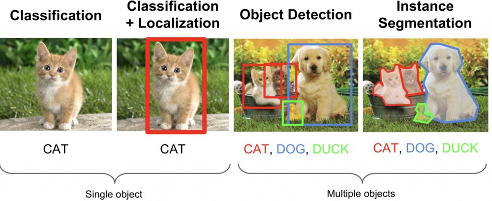
- Classification: "What is in this picture?" One answer for the whole picture. We use this for the apples.
- Object detection: "What is here, and where?" It draws boxes. We meet this with YOLO later.
- Segmentation: "Which pixels belong to which object?"
Check yourself
A camera on a conveyor belt only needs to say "good" or "bad" for each apple. Is that classification or detection?
Show answer
Classification. One label per picture, and no box is needed.
16AI, machine learning and deep learning
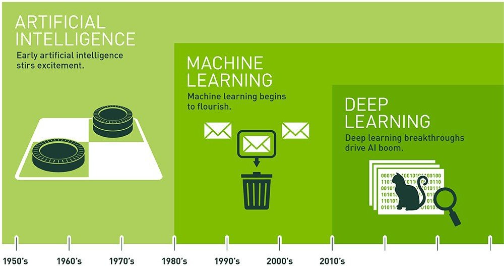
- Artificial intelligence (AI)
- Any computer program that does something we think of as smart.
- Machine learning
- The computer learns patterns from examples instead of following rules a person wrote by hand.
- Deep learning
- Machine learning that uses neural networks with many layers. It works especially well on pictures when there is plenty of data.
- Model
- What you get after learning: a file that takes a picture in and gives an answer out.
17The Raspberry Pi and its camera
The Raspberry Pi is a low-cost computer about the size of a credit card. Unlike an Arduino, it runs a full operating system, so you can run Python, open windows and use a camera.
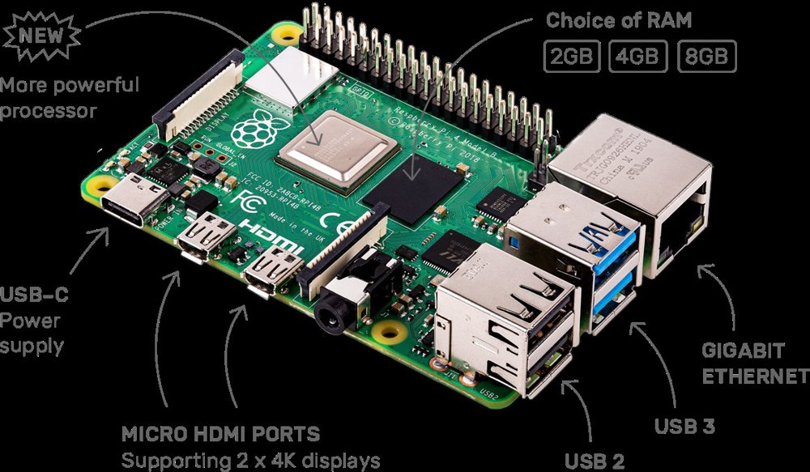
| You need | Why |
|---|---|
| Raspberry Pi 4 with power supply | The computer. |
| microSD card with the operating system | The Pi's storage. Install it with the free Raspberry Pi Imager program. |
| Monitor, keyboard and mouse | To use it like a normal computer. |
| USB camera | Plug it into a USB port. Your slides use a USB camera. |
Arduino vs Raspberry Pi: the Arduino is great at simple, reliable jobs such as reading a button or driving a motor. The Pi is better at heavy thinking such as recognising pictures. A robot can use both: the Pi decides, and the Arduino acts.
18Camera loop with Python and OpenCV
OpenCV is a free library of ready-made tools for working with pictures. A library is code that other people wrote so you do not have to. We use it with the Python language.
Open the Terminal on the Pi and prepare a workspace. Type these one at a time.
python3 -m venv ~/cv-env
source ~/cv-env/bin/activate
pip install opencv-python numpyThe first line makes a private box (a virtual environment) for this project's tools. The second one switches it on. The third installs OpenCV and NumPy.
Now the camera loop. Save it as camera.py and run it with python3 camera.py.
import cv2
cap = cv2.VideoCapture(0) # open camera number 0
while True: # repeat forever, like loop() on Arduino
ok, frame = cap.read() # take one picture (a "frame")
if not ok: # camera problem: stop
break
cv2.imshow("Camera", frame) # show the picture in a window
if cv2.waitKey(1) == ord("q"): # press the q key to quit
break
cap.release() # let go of the camera
cv2.destroyAllWindows() # close the windowSame idea, new language. A video is just many pictures, one after the other. while True: in Python does the same job as loop() on the Arduino: it repeats forever. Each time round, the program grabs a new frame. In Python, the lines that belong inside the loop are indented (pushed in) instead of using curly brackets.
Check yourself
What happens each time the loop goes round?
Show answer
The program reads one new frame from the camera, shows it in the window, then checks whether you pressed q.
19How a computer tells pictures apart
Image classification means giving a picture a label and a confidence score. For example: "ice bear, 97%".
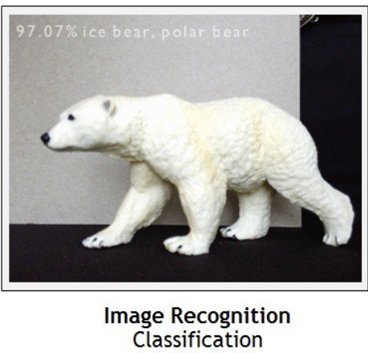
Inside, the model is a neural network: many tiny calculating units, loosely inspired by brain cells, connected in layers. For pictures we use a convolutional neural network (CNN):
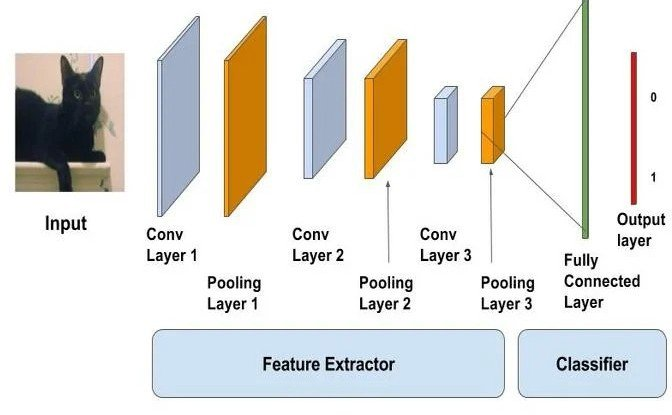
- The first layers look for simple things, such as edges and colours.
- Later layers combine them into bigger things, such as a stem or a bruise.
- The last layer gives a score for each label. The highest score wins.
You do not have to build this. Next, you teach one with examples.
20Teach it: good apple vs bad apple
Teachable Machine is a free website from Google. You show it pictures from your webcam, and it trains a model in your browser. No code is needed.
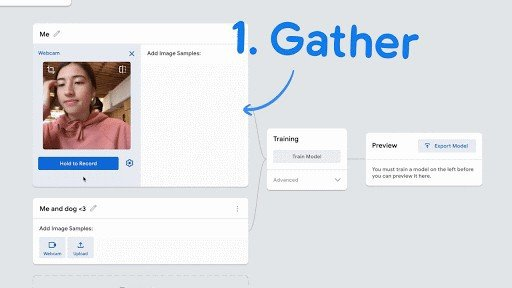
- Go to teachablemachine.withgoogle.com, choose Get Started, then Image Project, then Standard image model.
- Rename the first class
Good apple. Hold a good apple in front of the webcam and record many samples. - Rename the second class
Bad apple. Do the same with a bruised or rotten apple. - Add a third class
Nothingwith just the empty background, so the model learns what "no apple" looks like. - Click Train Model, then test it in the preview.
Tips for a better model
- Record at least 50 samples per class.
- Turn the apple around and move it closer and further away.
- Use several apples, not just one.
- Train in the same light and background where you will use it.
Check yourself
Your model calls everything a "bad apple". Name one thing you could do to fix it.
Show answer
Add more and varied samples of good apples (different angles and lighting), and make sure each class has a similar number of samples.
21Run your model on the Raspberry Pi
Now move your trained model from the browser onto the Pi.
- In Teachable Machine click Export Model, open the TensorFlow Lite tab, choose Floating point, and click Download my model.
- Unzip the download. You should see a
.tflitemodel file andlabels.txt. Copy both into one folder on the Pi, for example~/apples. - Install the TensorFlow Lite runtime, a small program that runs models, in the same terminal as before:
pip install tflite-runtimeIf that line fails on your Pi, use pip install tensorflow instead. The program below works with either.
Save this as apples.py in the same folder. If your model file has a different name, change MODEL.
import cv2
import numpy as np
try:
from tflite_runtime.interpreter import Interpreter
except ImportError:
from tensorflow.lite.python.interpreter import Interpreter
MODEL = "model_unquant.tflite" # your model file
LABELS = "labels.txt" # your label list
# --- set up (runs once) ---
labels = [line.strip().split(" ", 1)[1] for line in open(LABELS)]
interpreter = Interpreter(model_path=MODEL)
interpreter.allocate_tensors()
inp = interpreter.get_input_details()[0]
out = interpreter.get_output_details()[0]
size = inp["shape"][1] # the picture size the model expects
cap = cv2.VideoCapture(0)
# --- main loop (repeats forever) ---
while True:
ok, frame = cap.read()
if not ok:
break
# get the frame ready for the model
img = cv2.cvtColor(cv2.resize(frame, (size, size)), cv2.COLOR_BGR2RGB)
if inp["dtype"] == np.float32:
img = img.astype(np.float32) / 127.5 - 1 # scale to -1 .. 1
img = np.expand_dims(img, axis=0)
# ask the model
interpreter.set_tensor(inp["index"], img)
interpreter.invoke()
scores = interpreter.get_tensor(out["index"])[0]
if out["dtype"] == np.uint8:
scores = scores / 255.0
best = int(np.argmax(scores)) # the label with the highest score
text = f"{labels[best]} {scores[best]:.0%}"
print(text)
cv2.putText(frame, text, (10, 35), cv2.FONT_HERSHEY_SIMPLEX,
1, (0, 255, 0), 2)
cv2.imshow("Apple checker", frame)
if cv2.waitKey(1) == ord("q"):
break
cap.release()
cv2.destroyAllWindows()Run it with python3 apples.py. Hold an apple up to the camera, and the label and confidence appear on the video.
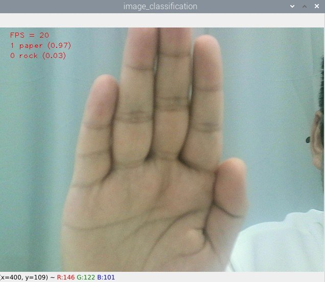
Read the program in the same three parts as the Arduino one: declaration (imports and file names), set up (load the model, once), and the loop (grab a frame, ask the model, show the answer, repeat).
Check yourself
- Which line makes the program repeat?
- Which line picks the answer with the highest score?
Show answers
while True: makes it repeat. np.argmax(scores) finds the best label.
Challenge: change the program so that it prints "REJECT" when the label is "Bad apple" and the confidence is above 80%. That is the first step towards a machine that sorts apples.
22Beyond one label: object detection and YOLO
Classification gives one answer per picture. But a street photo has cars, people and traffic lights, all at once. Object detection finds every object and draws a box around it, with a label.
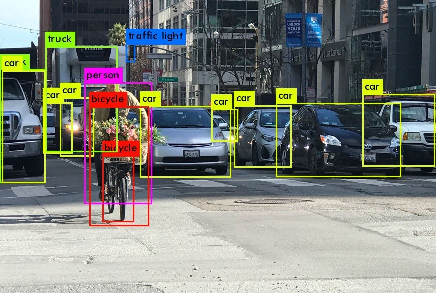
YOLO: "You Only Look Once"
YOLO is a very popular object detection model. Older methods looked at a picture many times to hunt for objects. YOLO looks once, so it is fast enough for live video. That is why it is used for robots, cars and cameras that need to react quickly.
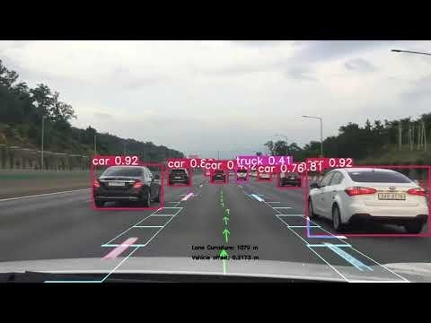
| Classification (Teachable Machine) | Detection (YOLO) | |
|---|---|---|
| Answer | One label per picture | Many labels, each with a box |
| Knows where? | No | Yes |
| Good for | Good or bad apple on a belt | Counting apples, finding one in a crate |
| Training effort | Low: show it examples | Higher: you must draw boxes on many pictures |
Try it (optional, not from your slides). On a computer or Pi with Python, a ready-made YOLO model can be tried in two commands. It downloads a model that already knows 80 everyday objects, such as people, cars, cups and apples. On a Raspberry Pi it may run slowly, so expect only a few frames per second. I have not tested this on your Pi.
pip install ultralytics
yolo predict model=yolov8n.pt source=0 show=Truesource=0 means "use camera number 0". Press q in the window to stop.
Check yourself
You want a robot to count how many apples are in a box. Classification or YOLO?
Show answer
YOLO (object detection). It finds every apple separately, so you can count the boxes.
23Edge or cloud?
Where does the thinking happen? Cloud computing sends the picture over the internet to a big computer far away. Edge computing does the work on the spot, close to the camera, like your Raspberry Pi.
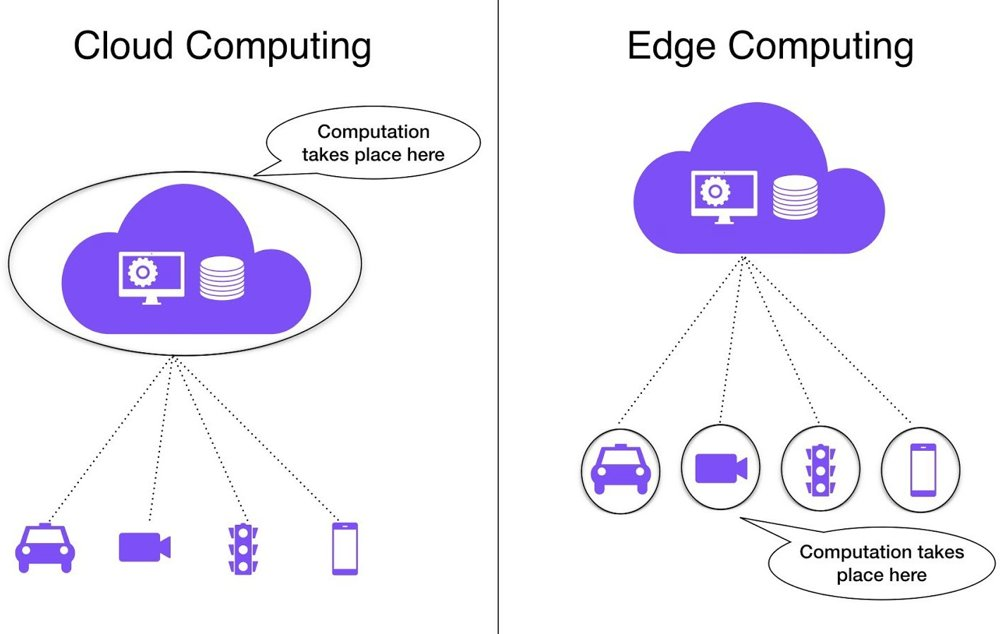
Running AI on a small device is called Edge AI. The apple checker is Edge AI. Why choose the edge?
- Fast. No waiting for the internet. A self-driving car cannot wait.
- Works offline. No connection needed.
- Private. Pictures stay on the device.
- Cheaper. Less data to send.
The trade-off: a small device is less powerful, so models must be small. That is why we exported a TensorFlow Lite model, a slimmed-down version made for small devices.
24Part 2 summary
- Computer vision lets computers understand pictures. Classification gives one label per picture. Detection finds objects and their position.
- Machine learning learns from examples. A model is the result.
- A camera program is a loop: grab a frame, process it, show or act on the result, repeat.
- With Teachable Machine you can train an image classifier in minutes and run it on a Raspberry Pi.
- YOLO is a fast object detector that finds many objects in one look.
- Edge AI runs the model on the device itself.
Reflection
What is the difference between machine learning and deep learning for pictures?
Show answer
In classic machine learning, people design the features to look for by hand. In deep learning, the neural network learns the features by itself from many examples.
Put it together: the Pi looks at the apple and decides good or bad. It tells an Arduino, which turns on an LED or moves a motor to sort the apple. That is a real mechatronic system.